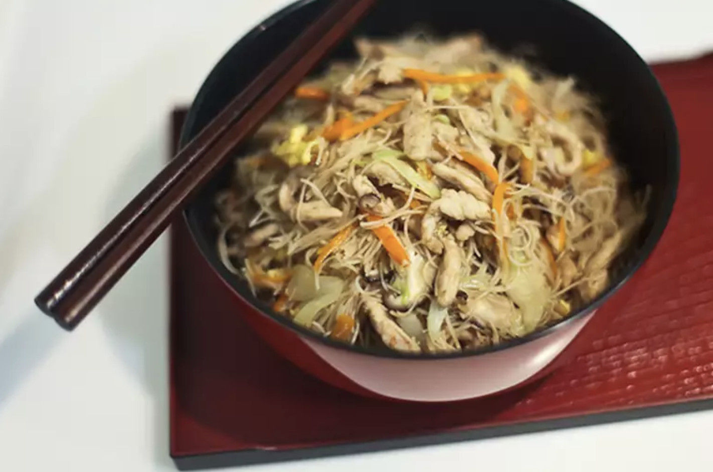

Taiwanese Fried Rice Noodles

Description
Experience the authentic flavors of Taiwan with our Taiwanese Fried Rice Noodles! Made with chewy rice noodles, tender pork, succulent shrimp, and crisp vegetables, all tossed in a savory soy and oyster sauce blend. Satisfy your cravings and try them today!
Ingredients
- ½ pound thinly sliced pork loin
- ¼ cup soy sauce
- ¼ cup rice wine
- 1 teaspoon white pepper
- 1 teaspoon Chinese five-spice powder
- 1 teaspoon cornstarch
- 4 dried Chinese black mushrooms
- 1 (8 ounce) package dried rice vermicelli
- ¼ cup vegetable oil, divided
- 2 eggs, beaten
- ¼ clove garlic, minced
- 1 tablespoon dried small shrimp
- 3 carrots, cut into matchstick strips
- ½ onion, chopped
- 3 cups bean sprouts
- 4 leaves napa cabbage, thinly sliced
- salt to taste
- 3 sprigs fresh cilantro for garnish
Directions
- Marinate pork in soy sauce, rice wine, and spices.
- Soak and slice mushrooms; soak rice vermicelli.
- Cook egg pancake; slice thinly.
- Stir-fry pork, garlic, and shrimp; add vegetables.
- Cook noodles, combine with pork mixture, and garnish with cilantro.
Home